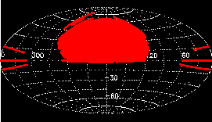
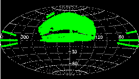
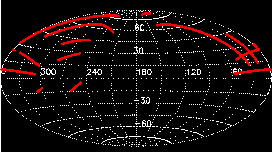
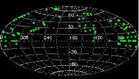

The Sloan Digital Sky Survey (see www.sdss.org for general information)
will map one-quarter of the entire sky and perform a redshift survey
of galaxies, quasars and stars. The DR6 is the sixth major data
release and provides images, imaging
catalogs, spectra, and redshifts for download. It is the first
data release of SDSS-II, an extension of the original SDSS consisting
of three subprojects: Legacy, SEGUE and a Supernova survey. The
first public data release from the Supernova Survey is available at www.sdss.org/drsn1/DRSN1_data_release.html
About DR6 explains what is new
in DR6, and lists remaining or new caveats and subtleties in the data.
Please refer to the credits
page for our sources of funding, participating institutions, and
how to acknowledge the use of SDSS data in your publications. Please
also note how to refer to SDSS sources in your publications using the
proper IAU nomenclature for SDSS
sources.
Imaging
| Footprint area |
|
| Imaging catalog |
287 million unique objects (SEGUE: 57 million, Legacy: 230 million) |
| Data volume |
| images | 10.0 TB |
| catalogs (DAS, fits format) | 2 TB |
| catalogs (CAS, SQL database) | 4 TB |
|
Average wavelengths and magnitude limits
(95% detection repeatability for point sources) |
| u |
g |
r |
i |
z |
| 3551Å |
4686Å |
6165Å |
7481Å |
8931Å |
| 22.0 |
22.2 |
22.2 |
21.3 |
20.5 |
|
| PSF width |
1.4" median in r |
| Pixel size |
0.396" |
| Exposure time for each pixel |
53.9 s |
| Photometric calibration |
Regular CAS and DAS
| r |
u-g |
g-r |
r-i |
i-z |
| 2% |
3% |
2% |
2% |
3% |
|
Only Ubercal table in CAS
| r |
u-g |
g-r |
r-i |
i-z |
| 1% |
2.2% |
1.5% |
1.5% |
1.5% |
|
|
| Astrometry |
< 0.1" rms absolute per coordinate |
Spectroscopy
| Spectroscopic area |
| Total |
7425 sq. deg. |
| Legacy |
6860 sq. deg. |
| SEGUE |
565 sq. deg. |
|
| Wavelength coverage |
3800-9200Å |
| Resolution |
1800-2200 |
| Signal-to-noise |
>4 per pixel at g=20.2 |
| Redshift accuracy |
30 km/sec rms for main galaxy sample (from repeat observations) |
| Target magnitude limits for main samples |
Galaxies: Petrosian r <17.77
Quasars: PSF i <19.1 (20.2 for objects likely
at z>2.3) |
| Spectroscopic catalog |
| Class |
N(total) |
N(main) |
N(SEGUE) |
| All |
1,271,680 |
1,163,520 |
108,160 |
| Galaxies |
790,860 |
790,220 |
640 |
| Quasars (z <2.3) |
90,108 |
89,458 |
650 |
| Quasars (z ≥2.3) |
13,539 |
12,892 |
647 |
| M stars and later |
69,052 |
64,895 |
4,157 |
| Other stars |
218,019 |
126,351 |
91,668 |
| Sky spectra |
68,770 |
59,843 |
8,927 |
| Unknown |
21,332 |
19,861 |
1,471 |
640 spectra are observed simultaneously on one
plate. There are:
|
| Data volume |
| calibrated spectra ("2d") | 80 GB |
| spectra, redshifts, line measurements ("1d") | 230 GB |
|
Previous data releases
For reference, we provide links to earlier data releases. The
current data release always provides both the largest sky coverage and
the highest-quality data and reductions.
This is version v6_20081024_0621 .
This page was last modified on $Date: 2008/06/11 19:48:56 $ (UT).
If you are using Netscape 4.x and see oversized fonts, please look at the workaround on the Credits page.

| News
BUG in spectroscopic
synthetic magnitudes:
mag_0,mag_1, mag_2 (they are u,g,r not g,r,i)
in DR6 CAS and in spSpec DAS headers
The DR6 paper (Adelman-McCarthy,
J.K. et al. 2008, ApJS, 175, 297-313) has appeared in
print.
|

| SDSS DR6
Imaging Sky Coverage (Aitoff
projection of Equatorial
coordinates) |

| SDSS DR6 Spectral Sky Coverage (Aitoff
projection of Equatorial
coordinates) |

| SEGUE DR6
Imaging Sky Coverage (Aitoff
projection of Equatorial
coordinates) |

| SEGUE DR6 Spectral Sky Coverage (Aitoff
projection of Equatorial
coordinates) |
|
|
|
|
|
{kind=link}
{kind=link}
{kind=link}
{kind=link}